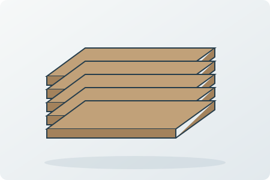

Decorative connections still carry loads
Visible brackets and trim can improve appearance, but must be selected for the actual structural connection. Use the specified hardware and fasteners rather than substituting a similar-looking piece.
Bedford, Texas
Custom pergola construction for patios, gardens and outdoor seating areas using coordinated posts, beams, rafters, finishes and optional lighting.
Pergolas / Bedford, Texas
For pergolas in Bedford, this guide focuses on decorative connections still carry loads. Use it to discuss the conditions at your property and compare the proposed work.
Visible brackets and trim can improve appearance, but must be selected for the actual structural connection. Use the specified hardware and fasteners rather than substituting a similar-looking piece.
If the property remains in use, agree on protected routes, room access, material storage and the point at which each area can be used again. The work plan should identify who moves belongings and how the construction area is separated.

Simpson Strong-Tie reference
Wood assemblies need a suitable species or treatment, sound supporting members and compatible connectors for the exposure.
Selection check
Review moisture exposure, end grain, ground contact, finish maintenance and fastener corrosion before selecting the lumber.
Lumber, finish and hardware can carry different terms. Ask for the actual supplier and component documents instead of assuming lifetime coverage.
Simpson Strong-Tie
Connectors transfer forces between specified framing members when installed with the correct compatible fasteners.
Selection check
Selection depends on the loads, wood treatment, exposure and connection geometry. Decorative appearance does not establish structural capacity.
Product documentation governs the selected connector. A hardware warranty does not replace structural design or cover an unspecified assembly.
Trex
Composite decking is a walking-surface material installed over an appropriately designed supporting structure.
Selection check
Compare the collection, color sample, heat exposure, joist spacing, fasteners and board gaps. Deck boards do not replace structural framing.
Trex offers limited residential terms of 25, 35 or 50 years depending on the collection; commercial terms and fade/stain provisions differ.
Visible brackets and trim can improve appearance, but must be selected for the actual structural connection. Bring photographs, dimensions and any relevant previous repair records to the discussion.
Compare exterior wood and compatible connections, structural connectors and fasteners, composite decking. Specify the selected components and the preparation they require.
Name the approved connector and fastener set. The work plan should identify who moves belongings and how the construction area is separated.
Include a room sequence, daily access route, protection responsibilities and a handoff before each area is returned to use. Confirm these details against the actual scope rather than assuming every phase can happen around normal occupancy.
Name the approved connector and fastener set. The written scope should also identify the selected products, work boundaries, required trade coordination and approval steps for changes.
No. These are references for comparing product categories. Availability, suitability, the exact model and the actual supplier must be confirmed for the property. A reference does not imply certification, stock or a brand affiliation.
Manufacturer coverage: Terms apply to the exact product and eligible application. Material coverage, complete-system programs and installation workmanship are different obligations. Request the current written warranty and care instructions; a warranty term is not a guaranteed service life. Generic illustrations are original explanatory artwork, not branded packaging.
Discuss the conditions at your property.
Include the project address, relevant photos and your priorities.
Visible brackets and trim can improve appearance, but must be selected for the actual structural connection. Use the specified hardware and fasteners rather than substituting a similar-looking piece.
If the property remains in use, agree on protected routes, room access, material storage and the point at which each area can be used again. The work plan should identify who moves belongings and how the construction area is separated.
Scheduling, access, protection, materials, trade coordination, cleanup and any hidden conditions are reviewed before work begins.
A pergola typically uses an open rafter design for partial shade, while a patio cover generally has a solid roof for greater weather protection.
Yes, depending on the wall, roofline, foundation and structural requirements. Freestanding designs are also available.
Yes. Luna General Contractors serves homes and businesses throughout Bedford and nearby communities.
Professional, reliable and detail-oriented from planning through completion. The craftsmanship and finished work exceeded expectations.
Read review summary · Source: Google →Top-notch communication, professionalism and attention to detail on a Jack-and-Jill bathroom renovation.
Read review summary · Source: Google →“Fair price for great work. Definitely recommend them for general repairs and maintenance.”
View public recommendation →Read customer feedback with the original source identified for every review.
View All Customer Reviews →Start Your Project
Tell us about your property and the work you have in mind. We can discuss the scope, access, material selections and next steps.